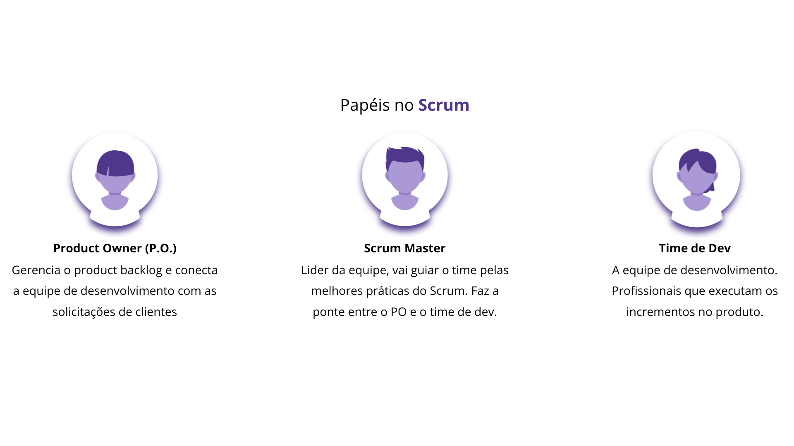

3ª Trilha: Papéis no Scrum
O Time Scrum é composto pelo Product Owner, o Time de Desenvolvimento e o Scrum Master. 
1. Product Owner (PO)
Todo o trabalho necessário em um projeto é organizado pelo Product Owner (PO, ou proprietário do
produto, em uma tradução aproximada) dentro de um backlog, que é uma lista com todas as tarefas que
precisam ser realizadas para desenvolver um produto ou criar um projeto, podendo se estender por
semanas ou até meses. O PO é o responsável por priorizar os itens que surgem conforme demanda com o
cliente, garantindo que a equipe esteja sempre focada nas tarefas mais relevantes.
Maximização do Valor: O Product Owner é fundamental para garantir que o produto final atenda
às expectativas do cliente e ao mercado. Para isso, ele deve ter um entendimento profundo do
mercado, dos usuários e das tendências, utilizando essas informações para direcionar o
desenvolvimento do produto.
Gerenciamento do Product Backlog: O PO é responsável pela criação e manutenção do Product
Backlog, que é uma lista priorizada de requisitos do produto. Ele deve garantir que cada item do
backlog esteja bem definido, incluindo critérios de aceitação claros e descrições que permitam ao
Time de Desenvolvimento entender o que precisa ser feito.
Priorização de Itens: O PO deve continuamente priorizar os itens do backlog com base no valor
para o cliente, feedback dos stakeholders e riscos associados. Essa priorização deve ser revisada em
cada Sprint Planning e ao longo do desenvolvimento, conforme novas informações e mudanças nas
necessidades surjam.
Alinhamento com Stakeholders: O PO atua como a voz do cliente dentro da equipe Scrum,
garantindo que as necessidades e expectativas dos stakeholders sejam consideradas nas decisões sobre
o backlog. Ele deve ser um bom comunicador, facilitando diálogos entre o Time de Desenvolvimento e
os stakeholders.
Colaboração com o Time de Desenvolvimento: O Product Owner deve trabalhar em estreita
colaboração com o Time de Desenvolvimento, esclarecendo dúvidas sobre os itens do backlog e
alinhando as expectativas. Isso ajuda a evitar mal-entendidos e a garantir que o time entenda
claramente o que se espera deles.
Responsabilidade pelo Backlog: Embora possa delegar algumas responsabilidades, o PO é o único
responsável pelas decisões relacionadas ao backlog e prioridades do produto. Ele deve garantir que o
backlog esteja sempre atualizado e refletindo as necessidades do negócio.